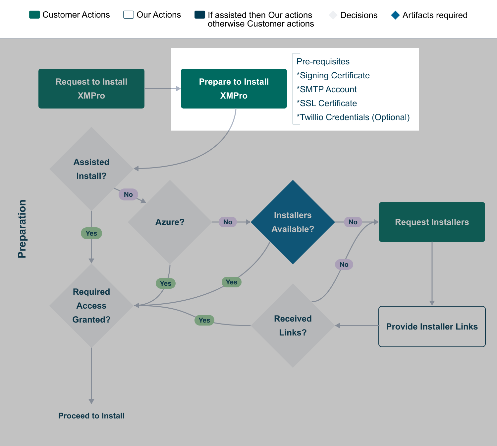

1. Preparation
Before attempting any of the supported XMPro deployment options (e.g. Cloud, On-Premise), these are the server prerequisites:
- Hardware Requirements
- Software Requirements
- Signing Certificate
- HTTPS/SSL Certificate
- SMTP Account
- Twilio Account (Optional)

Hardware and Software Requirements
Hardware Requirements
For each environment, refer to the Sizing Guideline guideline to compute resources needed for small, medium, and large deployments:
- Azure
- AWS
- On-Prem
Software Requirements
This section describes the software that must be installed on the server before installing XMPro (refer Deploy XMPro section), as well as the software required for the post-installation step of installing a Stream Host.
Web Application Servers and SQL Database Server
The following software must be installed on the web application server per product:
| Software Requirements | Azure 1 | AWS | On-Prem |
|---|---|---|---|
| Windows Installers | |||
| Microsoft .NET Framework 4.8.1 Runtime | No | No | Yes |
| Subscription Manager (SM) Web Application Server | |||
| Windows Server 2022 | Yes | Yes | Yes |
| Microsoft .NET Framework 4.8 Runtime | Yes | Yes | Yes |
| Microsoft Internet Information Services (IIS) 10 | Yes | Yes | Yes |
| IIS URL Rewrite 2.1 | Yes | Yes | Yes |
| Application Designer (AD) Web Application Server | |||
| Windows Server 2022 | Yes | Yes | Yes |
| Microsoft ASP.NET Core Runtime 8 (Hosting Bundle) | No | No | Yes |
| Microsoft Internet Information Services (IIS) 10 | Yes | Yes | Yes |
| IIS URL Rewrite 2.1 | Yes | Yes | Yes |
| Data Stream Designer (DS) Web Application Server | |||
| Windows Server 2022 | Yes | Yes | Yes |
| Microsoft ASP.NET Core Runtime 8 (Hosting Bundle) | No | No | Yes |
| Microsoft Internet Information Services (IIS) 10 | Yes | Yes | Yes |
| IIS URL Rewrite 2.1 | Yes | Yes | Yes |
| SQL Database Server (Combined SM, AD, DS) | |||
| Windows Server 2019 or 2022 | Yes | Yes | Yes |
| Microsoft SQL Server 2019 or 2022 | Yes | Yes | Yes |
Note
Footnotes
1 As per the ARM template for your Azure instance.
Stream Host Server
The following software must be installed on the Stream Host server:
| Software Requirements | Windows | Azure Web Job | Ubuntu | Docker |
|---|---|---|---|---|
| ASP.NET Core Runtime 8.0.3 | No 1 | Yes 2 | Yes 3 | No |
| .NET Runtime 8.0.3 | No 1 | Yes 2 | Yes 3 | No |
Note
Footnotes
1 Not a prerequisite from v4.4.1+.
2 As per the ARM template for your Azure instance.
3 See the Ubuntu software install commands here.
Certificate and Communication Steps
Signing Certificate
Subscription Manager manages Identity and access for the whole XMPro Platform. To do this, it regularly issues authentication tokens to the users as they log into the system. The server must sign these tokens to ensure their validity, hence a signing certificate is required.
A PKCS 12 archived certificate .pfx file is required. The minimum length of the accepted private key is 2048. Follow the instructions below to generate a Signing certificate:
- Download and install OpenSSL for Windows
- Open a command prompt as administrator and navigate to the OpenSSL install directory. The default location is
C:\Program Files\OpenSSL-Win64 - Run the following commands
cd C:\Program Files\OpenSSL-Win64
cd bin
openssl genrsa -out sign.pem 2048
openssl req -x509 -newkey rsa:4096 -sha256 -nodes -keyout sign.key -out sign.crt -subj "/CN={YourMachine}" -days 3650
openssl pkcs12 -export -out sign.pfx -inkey sign.key -in sign.crt -certfile sign.crt
- Follow the prompts on the screen and complete the certificate request
- Make a note of the Common Name ("/CN='') and Password you choose
- Create a file called sign.password.txt and add the password to the file
Note
The resulting sign.pfx and sign.password.txt files will be required during the installation.
HTTPS/SSL Certificate
The XMPro Platform enforces secure communication using HTTPS/SSL. This means the server it is deployed to must have HTTPS configured. Depending on the deployment option you choose, you may have the following options:
- Order a certificate from a certificate authority (CA)
- Create a certificate in AWS (AWS deployment only)
- Create a self-signed certificate (On-Premise only)
Note
The DNS or hostname that users are expected to use to browse to the XMPro Platform must correspond to the SSL Certificate Common Name.
Creating Self-Signed Certificate through PowerShell
If you need to create a self-signed certificate, open Windows PowerShell as administrator and follow the instructions below:
- Create SSL certificate with proper extensions, replacing "yourdomain.com" with your actual domain:
# Create SSL certificate with proper extensions
$cert = New-SelfSignedCertificate `
-Subject "CN=yourdomain.com" `
-DnsName @("yourdomain.com", "www.yourdomain.com", "localhost") `
-KeyLength 4096 `
-KeyAlgorithm RSA `
-HashAlgorithm SHA256 `
-KeyExportPolicy Exportable `
-KeyUsage DigitalSignature, KeyEncipherment `
-TextExtension @("2.5.29.37={text}1.3.6.1.5.5.7.3.1,1.3.6.1.5.5.7.3.2") `
-NotAfter (Get-Date).AddYears(1)
- Export to PFX with a strong password:
# Export to PFX
$password = ConvertTo-SecureString -String "YourStrongPassword" -Force -AsPlainText
Export-PfxCertificate -Cert $cert -FilePath "c:\ssl-cert.pfx" -Password $password
- Clean up the certificate from the local store (optional):
# Clean up
Remove-Item -Path "Cert:\LocalMachine\My\$($cert.Thumbprint)"
Note
The directory you specify in step 2's -FilePath parameter must already exist.
- Create a txt file with the name cert.password.txt and add the certificate password to this file.
Warning
Troubleshooting Self-Signed Certificate Issues
If the Subscription Manager installer reports certificate validation errors with PowerShell-generated certificates:
- Enhanced Security Parameters: The updated certificate command includes improved security settings (4096-bit RSA, SHA256 hash, proper key usage) that resolve most compatibility issues with the SM installer.
- Extended Key Usage: The certificate includes both Server Authentication (
1.3.6.1.5.5.7.3.1) and Client Authentication (1.3.6.1.5.5.7.3.2) extensions as shown in the command above. - Certificate Validation: Verify the certificate was created correctly by running:
Get-ChildItem -Path cert:\LocalMachine\My | Where-Object {$_.Subject -like "*yourdomain.com*"} - File Permissions: Ensure the exported
.pfxfile and.password.txtfile have appropriate read permissions. - Certificate Store: If you didn't run the cleanup command in step 3, the certificate will remain in the LocalMachine\My store, which is normal and expected.
Creating Self-Signed Certificate through IIS
The self-signed certificate can also be generated through IIS, following the instructions below:
- Open IIS Manager and click "Server Certificates"
- Click "Create Self-Signed Certificate"

- Enter "cert" for the Certificate name, select "Personal" for the certificate store, and click OK

- Confirm the certificate is generated and listed on 'Server Certificates'
- Right click on the certificate and Export, taking note of the location and password entered for later use
SMTP Account
XMPro components use emails to notify users of certain events, for instance, a new User signed up, or your account is ready. Please set up an SMTP account and have the necessary server details, as these are required for the notifications to work.
- TLS/SSL Security
- TLS encryption is required for secure email transmission
- Use port 587 (STARTTLS) for modern secure email delivery
- Enable SSL must be set to "true" in configuration
- Account Configuration You will need the following details from your email provider:
| Setting | Value | Description |
|---|---|---|
| Smtp Server | Your provider's SMTP server address | The fully qualified domain name of your SMTP server (e.g. smtp.office365.com) |
| User Name | Your SMTP account username | Often the same as your email address (e.g. noreply@mydomain.com) |
| Password | Your SMTP account password | Secure authentication credentials |
| Port | 587 | Required for TLS (STARTTLS) encryption |
| Enable SSL | true | Must be enabled for secure transmission |
Twilio Account (Optional)
App Designer uses SMS, among other means, to notify users of certain events e.g. a recommendation alert was triggered or resolved, etc. An SMS provider is required to send SMS notifications.
Please set up an account at Twilio using these instructions and have the necessary details handy, i.e. Account ID, Authorization Token, and the Phone Number.
Last modified: July 14, 2025